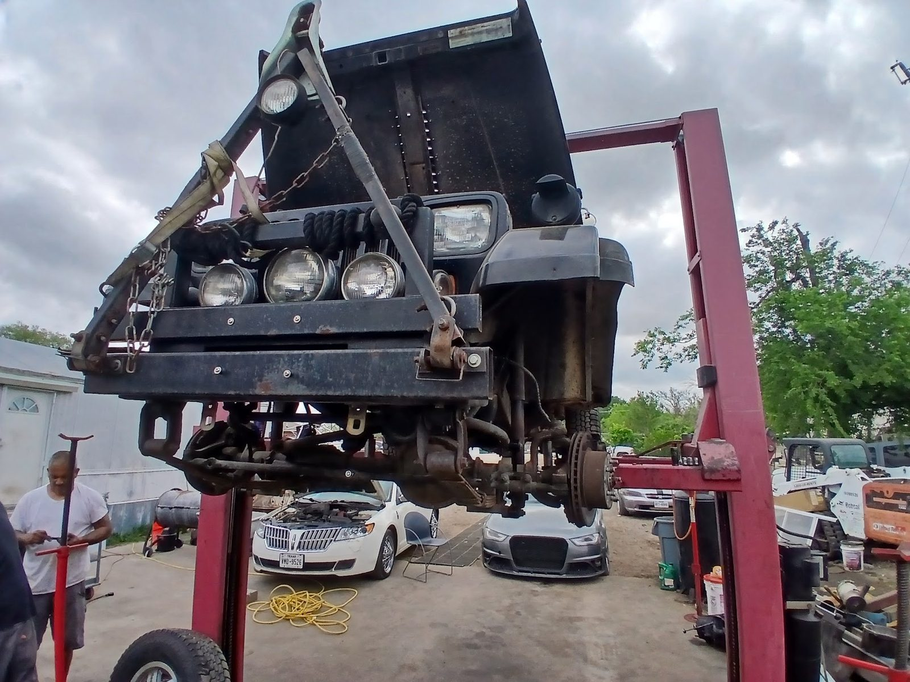

Multi-point inspection
Del Valle, TX
- Checked
- Watch
- Fix now
Auto repair · Del Valle, TX
Honest repair, in the shop or on the road
Martin and Daniel find the problem and show you. Many repairs are done the same day.

- Shop
- DVFS Auto
- Rating
- 4.4/ 5
- Signed off by
- 50Google reviews
- Call
- (512) 423-3679
- Diagnostics
- Engine replacement
- Oil changes
- Ball joints & control arms
- Rear suspension
- AC compressor
- Emissions repair
Systems we check
What we check and fix
From an oil change to an engine replacement.
- Checked
- Watch
- Fix now
-
Checked

Diagnostics, on site or at the shop
We come out, find the problem and fix it. Broken down on 620? Call.
-
Checked

Engine replacement
Engine replacement, including jobs through an insurance claim. You get updates throughout.
-
Checked

AC compressor and AC repair
AC compressor work and AC repair.
-
Checked
Suspension, ball joints and control arms
Ball joints, control arms and rear suspension, to keep you on the road.
-
Checked
Oil changes
The basics get done too. Quick, honest oil changes.
-
Checked
Emissions repair
Repairs so your car passes emissions inspection.
The record
- 4.4Google rating
- 50Google reviews
Signed off
Drivers on DVFS
4.4 / 5 from 50 Google reviews
Note
I Googled Mobile Mechanic in Del Valle. Wow! I found two of the most knowledgeable, kind, patient and experienced mechanics. After going to three awesome Discount tire stores to help me, thinking it was my tires. Well Daniel and Martin showed me the problem right away and repaired my car the same day. Yes, I'll recommend them anytime.
Note
Good, honest mechanics are still around! My girlfriend's car broke down, and two men from this shop (Danny and Marty) saw her, stopped, and helped her on the side of the road. They managed to get her car back to the shop and repaired it in about 4 hours. They were kind, helpful, and transparent throughout the entire process. I have nothing but good things to say about these guys! Thanks for all the help.
Note
Not only are they local they are a great shop to work with everyone works together to get the job done so your not waiting They have kepted me on the road Im a single mom and its hard to trust the right macanic that doesnt just try to take all your money they have done everything from oil change ball joints control arms rear suspension ac compressor and fixed everything emissions to pass inspection these men deserve…
Note
Martin came out and diagnosed my vehicle. I appreciate the convenience of his flexibility in being mobile! He fixed my vehicle I would highly recommend DVFS Auto to anyone having mechanical issues.
Note
Martin provided excellent service handling my engine replacement through an insurance claim. He was professional, helpful, and kept me informed throughout the process. He made everything smooth and stress-free. Highly recommend Martin!

The shop
On Pearce Lane in Del Valle
Cars, trucks and a few old classics fill the lot, and a red lift holds engines up while the work gets done.
Martin and Daniel run the shop and the mobile service. Honest, kind and clear about what your car needs.
Oil changes, ball joints, control arms, rear suspension, AC compressors. Emissions fixed to pass inspection.
- They show youWe point out the problem right away.
- Same-day fixesMost repairs done the same day.
- They come to youMobile service, even for a breakdown on 620.
Photos
Around the yard


Find us
Find the shop
15705 Pearce Ln, Del Valle, TX 78617
Stuck on the road? Call first. They do mobile repairs too.
Hours
- Mon
- 9 AM–7 PM
- Tue
- 9 AM–7 PM
- Wed
- 9 AM–7 PM
- Thu
- 9 AM–7 PM
- Fri
- 9 AM–7 PM
- Sat
- 9 AM–3 PM
- Sun
- Closed